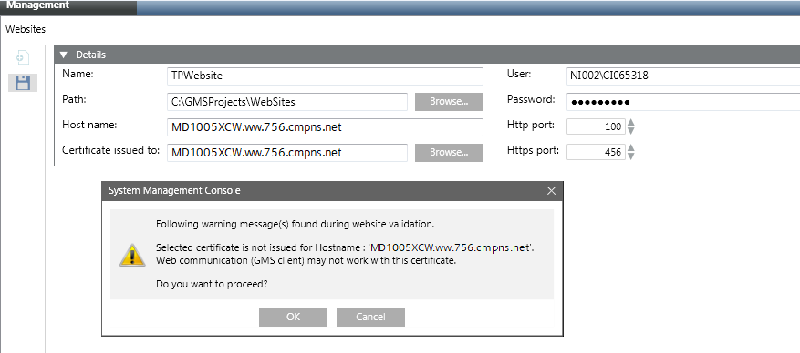
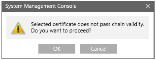

Create and Configure a Web Application for Export
- You are on the source machine.
- Create a website using the SMC on the source machine. Provide the host name as the host name of the target machine where you want to export the web application to be created under this website.
- Create a Web Application under the website using the SMC.
- The web application is created under the website whose host name is the same as the host name of the target machine.
- If one of the following messages displays during website creation, ignore them and click OK.

